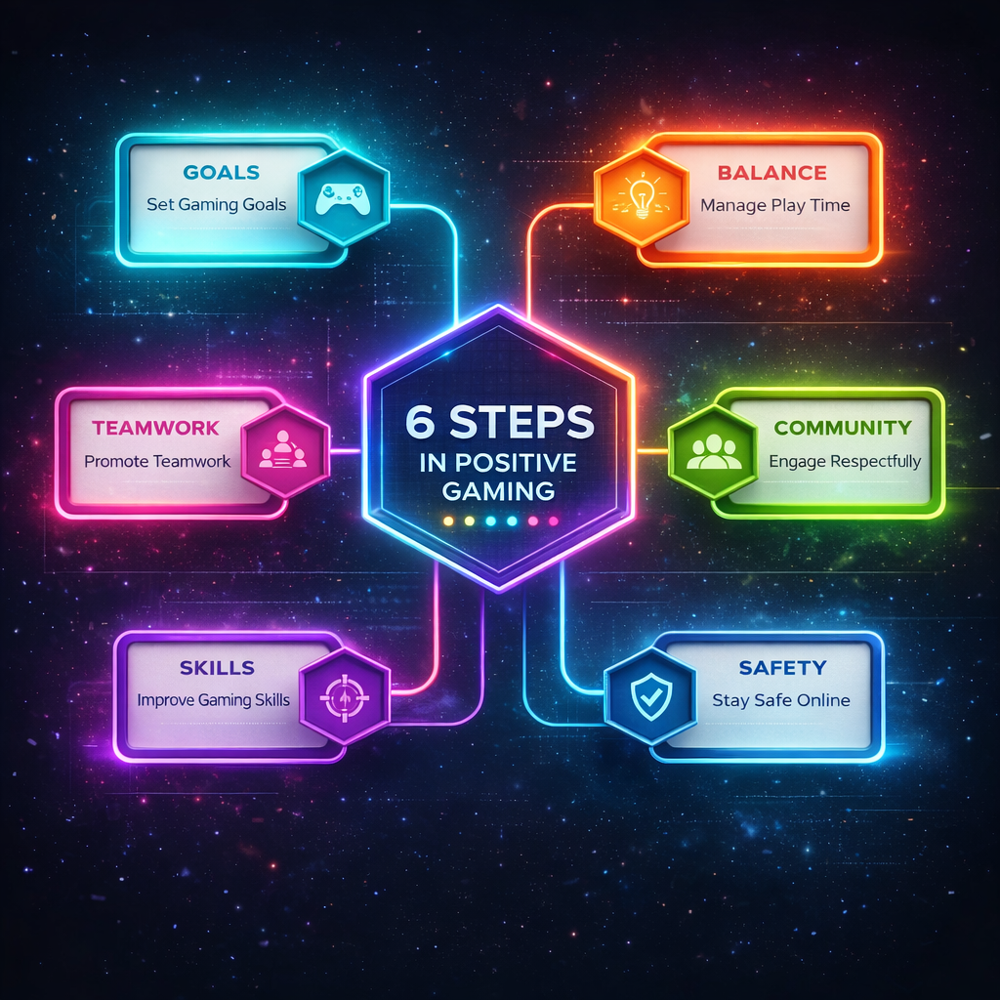

Learn about safe online gaming practices, digital well-being, and
cyber safety. This section aims to spread awareness and encourage
positive, responsible interaction in the digital world.
Awareness Tips
Play Smart • Stay Safe • Game Responsibly
✅ Do’s of Online Gaming
Set time limits and take regular breaks.
Maintain balance between gaming and daily activities.
Use strong passwords and privacy settings.
Communicate respectfully with other players.
Play age-appropriate and verified games.
Report abusive or suspicious behavior.
Stay physically active alongside gaming.
❌ Don’ts of Online Gaming
Don’t share personal or financial information.
Don’t play continuously for long hours.
Don’t engage in cyberbullying or toxic behavior.
Don’t ignore academic or work responsibilities.
Don’t download games from untrusted sources.
Don’t play late at night excessively.
Don’t become emotionally dependent on gaming.

🛡 Safety Practices
Use strong and unique passwords for gaming accounts
Enable two-factor authentication (2FA)
Avoid clicking unknown links or in-game offers
Never share personal or financial information
Report scams, hacks, and suspicious players
Take regular breaks to protect mental health
📘 Real-Life Impact
Builds global friendships and communities
Improves teamwork and communication skills
Reduces stress when played in moderation
Encourages problem-solving and creativity
Promotes digital responsibility and awareness
Creates career opportunities in esports & tech
🎯 Remember: Gaming is best enjoyed when it supports learning, relaxation, and social connection — not when it controls your lifestyle.